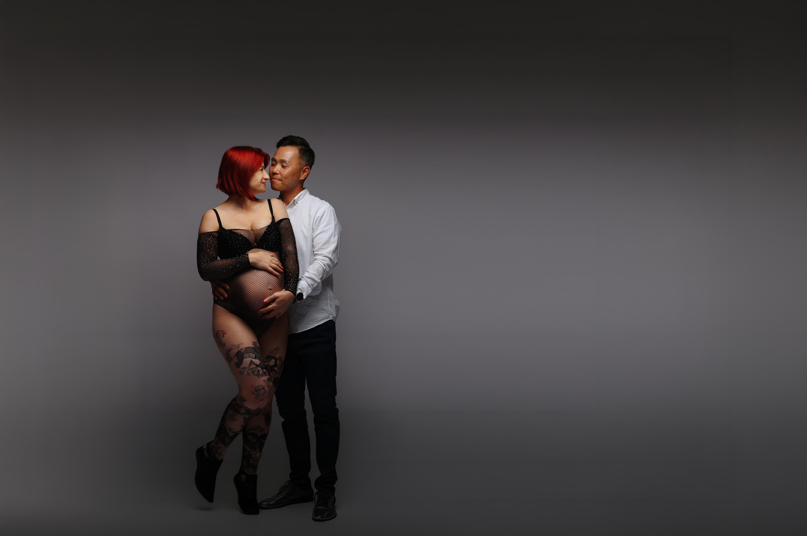

Babybauch Shooting in Karlsruhe, Pforzheim, Walzbachtal
Magische Schwangerschaftsfotos – romantisch, modern & zeitlos
Willkommen bei Anna Duleba Photography – Deiner Fotografin für Babybauch- und Schwangerschaftsfotografie in Karlsruhe, Pforzheim, Pfinztal, Walzbachtal und Umgebung. Ich kreiere emotionale, natürliche und ästhetische Schwangerschaftsbilder, die Deine besondere Zeit sichtbar machen – mit ganz viel Herz und Feingefühl.
In meinen Babybauch-Shootings verbinde ich romantische Lifestyle-Fotografie im Freien, zeitlose Studio-Porträts und moderne, farbige Fine-Art-Looks zu einer vielseitigen, harmonischen Galerie. So entstehen Bilder, die Dich als Frau, als werdende Mama und als Familie zeigen – ganz so, wie Ihr wirklich seid.
Warum ein Babybauch-Shooting bei mir eine besondere Erfahrung ist
Jede Session wird individuell geplant – mit viel Ruhe, Herz und Erfahrung. Mir sind besonders wichtig:
- Dein Wohlbefinden – eine entspannte, wertschätzende Atmosphäre ohne Stress und Zeitdruck
- natürliche Nähe – Bilder, die echte Emotionen zeigen, mit Partner, Geschwisterkindern oder ganz für Dich allein
- vorteilhafte Posen – sanfte Anleitung, damit Deine Haltung, Deine Silhouette und Deine Ausstrahlung schön zur Geltung kommen
- harmonische Farben & Lichtstimmungen – Looks, die Deine Haut schmeichelhaft zeigen und zeitlos wirken
- eine liebevolle, respektvolle Begleitung – Du entscheidest, was sich gut anfühlt und wie viel Du zeigen möchtest
Drei Bildwelten in einem Shooting
Du musst Dich nicht für einen Stil entscheiden. In einem Babybauch-Shooting kombiniere ich verschiedene Ansätze, sodass Deine Galerie abwechslungsreich und trotzdem stimmig wirkt:
- Romantische Lifestyle-Fotografie – warm, nah und natürlich
Weiches Tageslicht, echte Nähe und liebevolle Momente: Diese Aufnahmen entstehen im Studio oder draußen in der Natur rund um Karlsruhe und Walzbachtal. Sie zeigen Dich und Euch als Familie so, wie Ihr seid – entspannt, verbunden und mitten im Leben. - Klassische Studio-Porträts – elegant, zeitlos, ästhetisch
Reduzierte Hintergründe, harmonisches Licht und klare Kompositionen lassen Bilder entstehen, die modern und gleichzeitig zeitlos wirken – perfekt, wenn Du Dir hochwertige Schwangerschaftsfotos wünschst, die auch in vielen Jahren noch elegant aussehen. - Moderne Farb- & Kreativfotografie – mutig, künstlerisch, ausdrucksstark
Leuchtende Farben, künstlerische Beleuchtung und ein Hauch von Fine Art: In dieser Serie darf es moderner, intensiver und experimenteller werden. Ideal, wenn Du Deine Schwangerschaft mit Stärke, Charakter und einem ganz eigenen Stil zeigen möchtest.
Gemeinsam stellen wir aus diesen Elementen Deine persönliche Bildserie zusammen – von zart und romantisch bis modern und kraftvoll.
Mein Studio für Schwangerschaftsfotografie in Walzbachtal
Mein Studio liegt nur wenige Minuten von Karlsruhe entfernt und bietet alles, was wir für ein entspanntes und stilvolles Babybauch-Shooting brauchen:
- weiches, natürliches Licht für schmeichelhafte Hauttöne
- verschiedene Hintergründe – von hell & leicht bis dunkel & dramatisch
- eine Auswahl an Kleidern, Bodies und Tüchern, die Deine Formen schön betonen
- genügend Platz für Partner und Geschwisterkinder
- eine ruhige, geschützte Atmosphäre, in der Du Dich wohlfühlen kannst
Mir ist wichtig, dass Du Dich gesehen und schön fühlst – ohne Druck, ohne Perfektionszwang.
Wie läuft ein Babybauch-Shooting ab?
- Vorgespräch – wir klären Wünsche, Stil, Outfits und ob Studio, Outdoor oder beides.
- Ankommen im Studio oder vor Ort – Zeit zum Ankommen, Umziehen, Durchatmen.
- Geführte Portraits – ich leite Dich sanft an, damit Haltung, Hände und Blick harmonisch wirken.
- Bilder mit Partner & Geschwisterkindern – echte Nähe, Lachen und kleine zärtliche Momente.
- Kreative Looks – auf Wunsch wechseln wir Outfit, Lichtstimmung oder Location.
- Auswahl über Online-Galerie – Du wählst in Ruhe Deine Lieblingsbilder aus den fertigen Motiven.
So entsteht eine Galerie, die Deine Schwangerschaft in all ihren Facetten zeigt – zart, stark, modern und voller Gefühl.
Der beste Zeitpunkt für Babybauchfotos
Für klassische Babybauchbilder empfehle ich die Zeit zwischen der 28.–34. Schwangerschaftswoche. Dein Bauch ist dann schön rund, Du kannst Dich in der Regel noch gut bewegen und wir haben genug Spielraum für verschiedene Posen.
Natürlich sind auch frühere oder spätere Termine möglich – wichtig ist, dass Du Dich wohlfühlst. Schreib mir einfach, sobald Du weißt, dass Du ein Shooting möchtest, damit ich Dir einen passenden Termin reservieren kann.
Tipp: Babybauch-Termine sind beliebt; sichere Dir am besten frühzeitig einen Slot, damit wir mit entspanntem Zeitplan arbeiten können.
Sicherheit, Wohlbefinden & Body-Positivity
Deine Grenzen und Dein Körpergefühl stehen für mich an erster Stelle. Ich leite Dich aufmerksam an, achte auf Pausen und darauf, dass jede Pose bequem ist. Du bestimmst, wie viel Haut Du zeigen möchtest – von komplett bekleidet bis sinnlich, aber immer stilvoll.
Mein Ziel ist, dass Du Dich auf den Bildern wiedererkennst – nur mit einem kleinen Extra an Glanz, Ruhe und Selbstvertrauen.
Studio & Outdoor – zwei Locations, viele Möglichkeiten
Du kannst wählen zwischen:
- Studio in Walzbachtal – warm, wetterunabhängig und perfekt vorbereitet
- Outdoor in der Natur (Frühjahr bis Herbst) – weiches Licht, Blumenfelder, Wald oder Wiesen rund um Karlsruhe
Auf Wunsch kombinieren wir beides in einer Session – zum Beispiel zuerst helle, luftige Studiofotos und anschließend eine romantische Runde im Abendlicht.
Warum Familien zu mir nach Karlsruhe & Walzbachtal kommen
Familien entscheiden sich für Anna Duleba Photography, weil sie natürliche, emotionale Bilder wollen, die gleichzeitig elegant und hochwertig aussehen.
- Bilder möchten, die aussehen wie aus einem Magazin und sich trotzdem ganz natürlich anfühlen
- wärmevolle, emotionale Erinnerungen an diese kurze Zeit der Schwangerschaft suchen
- eine professionelle, einfühlsame Begleitung wünschen
- harmonische Farben, schöne Kleider und stimmige Lichtkonzepte lieben
- eine Fotografin möchten, die zuhört, versteht und sie sicher durch das Shooting führt
Deine Babybauchfotos sollen wertvoll aussehen – und sich genauso wertvoll anfühlen, wenn Du sie Jahre später wieder in die Hand nimmst.
Preise & Pakete
Eine detaillierte Übersicht über alle Babybauch-Pakete findest Du hier:
Zur Preisliste
Häufige Fragen zum Babybauch Shooting
Wann ist der beste Zeitpunkt für ein Babybauch Shooting?
Am schönsten ist ein Babybauch Shooting meist zwischen der 28. und 34. Schwangerschaftswoche. Der Bauch ist dann bereits schön rund und viele werdende Mamas fühlen sich noch beweglich und wohl.
Kann mein Partner oder Geschwisterkind beim Shooting dabei sein?
Natürlich. Sehr viele Familien entscheiden sich für gemeinsame Bilder mit Partner oder Geschwisterkindern. Gerade diese natürlichen Momente machen Schwangerschaftsfotos besonders emotional und wertvoll.
Gibt es Kleider oder Accessoires im Studio?
Ja, im Studio stehen verschiedene Kleider, Stoffe, Tücher und ausgewählte Accessoires zur Verfügung. Gemeinsam besprechen wir vorab, welche Farben und Looks am besten zu Dir passen.
Muss ich Erfahrung vor der Kamera haben?
Nein. Die meisten Frauen stehen nicht regelmäßig vor der Kamera. Während des Shootings leite ich Dich sanft an und helfe Dir bei Posen, Haltung und kleinen Details, damit natürliche und schöne Bilder entstehen.
Ist ein Outdoor Shooting möglich?
Ja. Besonders im Frühling, Sommer und Herbst entstehen draußen wunderschöne, romantische Schwangerschaftsbilder – zum Beispiel auf Wiesen, in Obstgärten oder im warmen Abendlicht rund um Karlsruhe und Walzbachtal.
Wie lange dauert ein Babybauch Shooting?
Je nach Paket und Bildstil dauert ein Shooting meistens zwischen 1 und 2 Stunden. Mir ist wichtig, dass genug Zeit für Outfitwechsel, kleine Pausen und eine entspannte Atmosphäre bleibt.